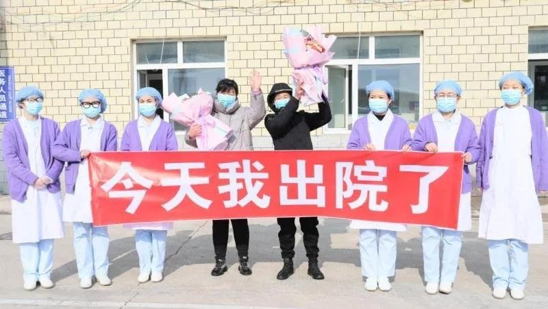

300秒回顾武汉战疫，数读封城后的武汉之变
原文链接 备份链接 经历了“封城”一个月的武汉，到底怎么样了? 全文2100字，阅读约需4分钟 点击下图进入阅读新京报特别策划 *数据新闻编辑 **陈华罗、李媛 新媒体设计 高俊夫、李亚珍 校对 何燕* ▲300秒回顾武汉战疫：宏大数 …
嫩江市，一座因境内的母亲河嫩江而得名的小城，隶属黑龙江省黑河市的县级市，边陲中的边陲。这里距武汉2261公里，没有一列车直达，无论自驾还是坐火车中转，耗时都在30小时以上。
很多嫩江人由此相信新型冠状病毒到不了家门口。就算到了，“零下20多度的低温会把病毒冻死”“一天喝3顿酒的人也能凭酒精把病毒杀死”。
然而事与愿违。2月12日，嫩江出现4例新冠肺炎确诊病例。冷风热酒全没有用，两天后，确诊人数增至7例，嫩江成为黑河市疫情最重的辖区。
据财新网2月21日统计数据，黑龙江省疫情呈现出重症率、死亡率双高的特点：重症72例，除湖北省外居全国首位；辖区内，绥化市死亡率（8.51%）和双鸭山市死亡率（5.76%）远超同期的武汉死亡率（3.7%）。
双高重压之下，46万余名嫩江人向外求援。可疫情严重的地方太多，能顾及边陲小城的地方太少。声音被瞬间淹没，他们只能摸索着自救。
“嫩江一夜确认4例阳性，医院仅剩16只N95口罩，恳请各界人士伸出援手 。”
2月12日下午，90后女孩辛紫发微博帮家乡征集物资。她的母亲在嫩江人民医院工作，那是当地收治新冠肺炎患者的唯一定点医院，最易交叉感染。
微博上搜索嫩江的人一向屈指可数，这座由古道驿站发展而来的东北小城，不具备任何吸引全国目光的景物特色。果然，辛紫的征集效果一般，仅有的25条评论中，没有一条物资线索。
官方渠道的网上征集数据更差。嫩江人民政府官方微博在同一天发布了征集医用防护口罩的倡议书，转赞评均未超过20。主体为嫩江网络工作管理办公室的微信公众号“印象嫩江”，发布的倡议书阅读量125。
粉丝少无疑是官方号召力小的直接原因。每天花大把时间上网的在读研究生柴倍告诉中国新闻周刊，自己从未关注过家乡的任何官方账号。“年轻人觉得（内容）无趣，年纪大的会看互相转发的文章，不会固定看某一个号。”
外乡人不搜，自己人不看，嫩江人的互联网发声显得有些无力。明明在2月11日，他们的朋友圈刷屏内容还是“嫩江支援湖北孝感5名医护人员”，没想到一天不到，援助者就变成了求助者。
改变这一切的是被认定为首例确诊病例的刘姓男子。据嫩江市政府官网，这位水果蔬菜批发商曾在1月13日去齐齐哈尔第一医院陪护父亲，此外再没出过嫩江。一同确诊的其他3名病例，分别是他的妻子、姐姐、姐夫。

刘姓男子水果蔬菜批发店门前的对联上，贴着“不戴口罩，禁止入内”。 图片来源：嫩江市人民政府官网
凭借4人的强烈关联性，市里陆续排查出数十名隔离人员。好在，得益于省内企业和相关部门援助，嫩江人民医院及时补齐了所需医疗物资。
嫩江人也进入了正式防疫状态。他们复制社区委员的通知、保存短视频平台上的消毒小妙招，把内容转到家族微信群和朋友圈里。线上寻求外界帮助不再重要，他们要做的只有一件事——告诉自己在乎的人，“现在嫩江不安全了”。
线下防疫之困
2月5日，市内实施交通管制；2月12日，小区实施封闭管理；2月16日，外出返乡人员一律集中隔离……随着确诊人数上升，嫩江的防疫举措不断加强。
但事实上，病毒之外，嫩江人还面临着许多“专属”防疫困境。
首先是零下几十度的低温。开窗通风只能坚持几分钟，步行买的菜会在路途中受冻。柴倍用10分钟拎回家的黄瓜、西红柿，能吃的部分基本不超过1/3。
其次是有限的医疗资源。嫩江市区内只有两家医院，非三甲，且缺乏防疫实战经验。需要就诊的病人往往陷入两难，去专攻新冠的人民医院有感染风险，选非定点的中医医院，又要在密集人流中排队等待。
有些病人甚至连选择的权利都没有。
2月17日晚，肖栋接到了姑姑的求助电话。对方称自己刚从外地返乡不久，突发高血压，因为家里没人，需要他陪同乘救护车去医院。
“她打给人民医院，说急诊只收新冠患者。打给中医医院，说返乡隔离期的人都要去人民医院。” 肖栋向中国新闻周刊回忆起当时的场景：“后来给社区和包保单位打了无数个电话，终于定到一辆救护车。”

嫩江医护人员驰援武汉 图/受访者供图
可当他和妻子到了小区门口时，门卫坚决不让他们出门。他强调救护车要求必须有家属陪同，对方坚持见隔离人员有风险。双方争执不下，他只好找姑姑再走一遍“电话批复”流程。
防疫措施的变通是一道难题，尤其是对小城镇的执行者而言。没人想成为家乡的罪人，重任在肩，他们必须把不出错当做第一衡量标准。
于是，肖栋的妻子安置好姑姑后回家，被再次拦在了小区外。肖栋不好在深夜再麻烦社区，只得把妻子叫回医院住。还曾有网友看到黑龙江省七台河市的铁路工作人员，站在绿皮车车厢门口“劝退”乘客：
“你下车也是强制隔离，哪来的回哪去吧，对大家都好。”
放下心是需要过程的
据黑龙江省卫健委，截至2月23日24时，黑龙江省共有新型冠状病毒肺炎确诊病例480例，在全国排名12位；共有累计死亡12例，全国排名第3，仅次于湖北省和河南省。
黑龙江省新冠重症肺炎专家组组长、哈尔滨医科大学附属第一医院院长于凯江曾于2月13日就高死亡率总结四个主因：死亡患者年龄偏大，多有复杂基础性疾病，因天气寒冷肺部疾病患病率较高，缺少必要的防范意识。
柴倍对第4条因素感触颇深。即便每天关注武汉疫情，他还是在过年前后多次和同学聚餐。大年初一上午，他两次邀请从湖南返乡的老同学“出来耍”，因为他始终认为，新冠肺炎会像SARS一样，绕过自己偏远的家乡。
确诊病例出现后，很多抱有同样心理的嫩江人感受到了加倍的恐惧。他们开始质疑医院瞒报，打听小道消息，以求抢占些所谓的先机。
钟越还记得母亲告诉自己“嫩江有30例确诊病例”时的复杂心情。在外省工作的她从未质疑过母亲发来的家乡疫情速报，可30例太夸张了，一听就是假的。
她告诉中国新闻周刊，母亲的消息是从自己一个好多年不联系的堂哥那里听来的。“说什么他同学就是确诊病例之一，他根本没上过几天学，哪来的同学。”
黑河市人民政府网消息显示，截至2月23日，嫩江市共有6名患者痊愈出院。在介绍最新出院的两名确诊患者情况时，文中写着“经过2次核酸检测阴性和市院际专家组会诊，确认痊愈”。

图片来源：黑河市人民政府官网
好消息陆续传来，看了太多真真假假疫情消息的嫩江人反而心里打鼓。这些天，种种从未见识过的防疫举措让他们坚信病毒威力无比，此刻突然说“治愈”，很难适应过来。
他们需要了解更多才能放心：以小城现有的医疗条件，真的能治愈吗？为什么这么快就可以出院？听说人民医院的医护人员都在宾馆统一居住，十几天没有回家。如果形势好转，他们会这么累吗？
人民医院一名工作人员向中国新闻周刊证实了医护的忙碌程度，“每天加班都到后半夜”。但关于疫情的其它问题，截至发稿前，医院仍未给出官方回复。
嫩江的母亲河仍在冰封之中，在家闲不住的柴倍曾去看过一次。江面盖着厚厚的白雪，他看不出冰有多厚。
不过每年开江的时间都差不多，他相信今年也一样。江水从未停止流动，冰总会化开。
应受访者要求，文中人名均为化名。返回搜狐，查看更多
原文链接 备份链接 经历了“封城”一个月的武汉，到底怎么样了? 全文2100字，阅读约需4分钟 点击下图进入阅读新京报特别策划 *数据新闻编辑 **陈华罗、李媛 新媒体设计 高俊夫、李亚珍 校对 何燕* ▲300秒回顾武汉战疫：宏大数 …
原文链接 备份链接 澎湃新闻记者 刘栋 实习生 董安琪 新冠病毒疫情在韩国的发展突然加速。 2月20日，韩国新增53例确诊病例，超过了过去一个月所有确诊病例总和。21日上午，韩国疾病预防控制中心（KCDC）最新通报称，再新增52例确诊病 …
原文链接 备份链接 岛语 非常时期，武汉成了全国人民挂念、祈福的城市。封城后，武汉人民的真实生活是什么样？ 武汉在发生哪些变化？ 正和岛自1月26日起特别推出“叶青专栏”。叶青是一位定居武汉40年的市民，也是一名学者和官员。在过往多期的专 …
原文链接 备份链接 【财新网】（记者 赵宁）北京疫情增速放缓，但防控力度仍未放松。2月16日北京仅新增1例新冠肺炎确诊病例，这是北京连续4天新增确诊病例保持个位数。北京累计疑似病例也从2月11日开始连续6日下降。尽管整个疫情呈现放缓迹 …
原文链接 备份链接 封面报道之防控篇： 随州：三甲医院里的战斗 | 宜昌：被确诊护士的观察 | 荆州：感染科专家在前线 | 天门：鏖战“病死率” | 恩施：高治愈率背后 | 黄石：“稳住就赢了” 特产“黄冈密卷”的学霸之城，在新冠肺炎疫情 …